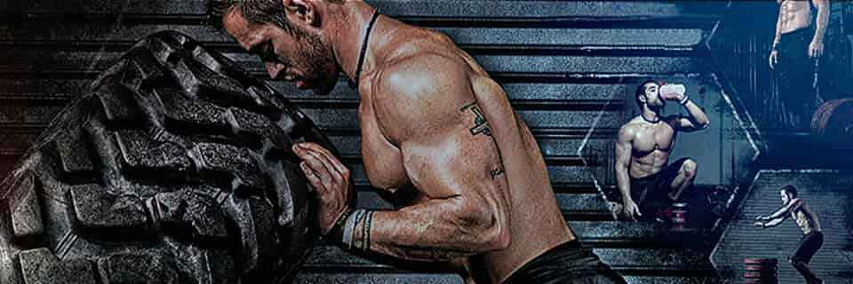
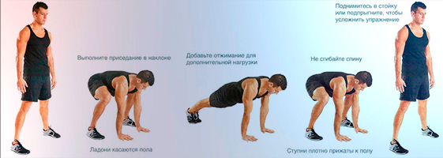

Настройки Табата Таймера: Полный Гид
Выбери идеальный режим для своих тренировок: от классики 20/10 до экстрима 45/15. Всё, что нужно знать о настройках интервального таймера.
🔥 Классика: Табата 20/10
Что это такое?
Легендарный протокол Изуми Табата - 20 секунд работы на максимум + 10 секунд отдыха. Повторяется 8 раундов = ровно 4 минуты. Это не просто тренировка, это испытание твоей силы воли!
Для кого подходит?
- Продвинутые спортсмены
- Те, кто хочет сжечь жир быстро
- Любители высокоинтенсивного кардио
❌ Не подходит новичкам (слишком жёстко!)
Примеры упражнений
👉 Открыть список упражнений
- Бёрпи (классика жести)
- Прыжки на скакалке
- Спринт на месте
- Приседания с выпрыгиванием
- Махи гирей
- Планка с подтягиванием коленей
- Jumping jacks
- Горные альпинисты
Научные факты 🔬
Исследование Университета Висконсина показало, что 4-минутная табата-тренировка сжигает столько же калорий, сколько 30 минут обычного кардио! Это реально работает, проверено наукой.
Для начинающих: Табата 30/30

Суть
30 секунд работы + 30 секунд отдыха - более щадящий вариант, идеальный для первого знакомства с интервальными тренировками. Здесь у тебя есть время восстановиться и не упасть в обморок 😅
Преимущества
| Параметр | Значение |
|---|---|
| Интенсивность | 7/10 |
| Подходит новичкам | ✅ Да |
| Сжигание калорий | ~15 ккал/мин |
| Риск травм | Низкий |
Программа на неделю
📅 Понедельник
- Разминка 5 мин
- Табата 30/30 (4 круга):
- Приседания
- Отжимания (можно с коленей)
- Планка
- Jumping jacks
- Заминка + растяжка 5 мин
📅 Среда
- Разминка 5 мин
- Табата 30/30 (4 круга):
- Выпады
- Скручивания
- Планка боковая
- Бёрпи (упрощённые)
- Заминка + растяжка 5 мин
📅 Пятница
- Разминка 5 мин
- Табата 30/30 (4 круга):
- Приседания с прыжком
- Отжимания широким хватом
- Планка с подтягиванием коленей
- Горные альпинисты
- Заминка + растяжка 5 мин
🚀 Экстрим: Табата 40/20
О режиме
40 секунд пахать + 20 секунд дышать - для тех, кто считает обычную табату слишком лёгкой. Серьёзно, это brutal mode! Здесь ты почувствуешь, что такое настоящая боль (хорошая боль 😈).
Кому осилить?
- Атлеты с опытом 1+ год
- CrossFit-еры
- Те, кто готов к боли (хорошей боли 😈)
Что говорят профи?
"40/20 - мой любимый формат для сушки. За месяц скинул 5% жира, сохранив мышцы" - Алексей, тренер по кроссфиту
⚠️ Важно!
Противопоказания:
- Проблемы с сердцем
- Гипертония
- Травмы суставов
- Беременность
Обязательно:
- Консультация врача перед началом
- Правильная разминка 10+ минут
- Держи бутылку воды рядом
- Не стесняйся делать паузы
Для выносливости: Табата 45/15
Фишка
45 секунд работы + 15 секунд восстановления - максимум времени под нагрузкой. Развивает не только силу, но и mental toughness. Ты научишься работать через усталость!
Идеальные упражнения
Рейтинг по эффективности:
- 🥇 Бёрпи с отжиманием - король упражнений (180 ккал/10 мин)
- 🥈 Махи гирей - взрывная сила (150 ккал/10 мин)
- 🥉 Спринт в гору - если есть возможность (140 ккал/10 мин)
- Battle rope - убийца рук и кора (130 ккал/10 мин)
- Box jumps - прыгучесть и мощь (125 ккал/10 мин)

Питание до и после
За 1-2 часа до:
- Овсянка + банан
- Греческий йогурт + ягоды
- Смузи (банан, молоко, протеин)
После тренировки (30 мин):
- Протеиновый коктейль
- Курица + рис
- Омлет + овощи
🛠️ Кастомные настройки
Создай свой идеальный протокол! Не все подходят под стандартные форматы, и это нормально. Экспериментируй, находи свой ритм.
Рекомендации по настройке:
| Параметр | Минимум | Максимум | Рекомендация |
|---|---|---|---|
| Работа | 10 сек | 60 сек | 20-40 сек |
| Отдых | 5 сек | 60 сек | 10-30 сек |
| Раунды | 1 | 20 | 4-8 |
| Циклы | 1 | 10 | 1-3 |
Музыка для табаты прямо в таймере
Правильная музыка может поднять твою производительность на 15-20%! В нашем таймере есть два способа добавить музыку к тренировке: специальные табата-треки и радиостанции. Всё готово к использованию — просто выбери и тренируйся!
🎧 Специальные табата-треки
Мы подготовили коллекцию специально адаптированных треков для табата. Это не просто музыка — это треки, которые идеально синхронизированы с интервалами тренировки. Каждый трек создан с учётом ритма табаты, чтобы мотивировать тебя во время работы и помогать восстановиться во время отдыха.
Что доступно:
- Rocky — классика мотивации для максимальной отдачи
- A Brazil Batucada — энергичные латиноамериканские ритмы
- Africa Tabata — экзотические африканские мотивы
- Back in Black — мощный рок для силовых тренировок
- Bichota — современные латинские биты
- Blinding Lights — популярный хит в табата-версии
- Blue Da Ba Dee — электронная энергия
- Bring Sally Up — идеально для синхронизации движений
- Circles — плавные ритмы для выносливости
- И ещё 30+ треков на любой вкус!
📻 Радиостанции для тренировок
Хочешь разнообразия? Включи одну из наших радиостанций! Это живые потоки музыки разных жанров, которые идеально подходят для тренировок. Музыка играет непрерывно, создавая атмосферу настоящего спортзала.
Доступные жанры и станции:
- 2-step — двухшаговый EDM для ритмичных тренировок
- GOA/PSY VIP — психоделический транс для длительных сессий
- Армин ван Бюрен — топовые треки от легенды электронной музыки
- Басовый Дом — мощные басы для максимальной мотивации
- Большие Хиты — только самые популярные треки
- Будущий Бас / Будущий Дом / Будущий Рейв — футуристические звуки
- Вечеринка 24/7 — непрерывная энергия
- Веснушка FM — лёгкие и позитивные треки
- Гараж в Великобритании — аутентичный UK garage
- И ещё 50+ радиостанций на любой настрой!
Как использовать?
- Перейди на главную страницу таймера
- Выбери режим тренировки (Табата, HIIT, EMOM или AMRAP)
- Настрой интервалы под себя
- Выбери музыку:
- Для табата-треков: используй выпадающий список "Плейлист"
- Для радио: выбери "Радиостанцию" из списка
- Нажми "Старт" и наслаждайся тренировкой с музыкой!
💡 Совет: Экспериментируй! Разные треки и радиостанции подходят для разных типов тренировок. Для высокоинтенсивных интервалов выбирай энергичные треки с мощными басами, а для длительных сессий — радиостанции с непрерывным потоком музыки.
💡 Часто задаваемые вопросы
🤔 Можно ли делать табату каждый день?
Не рекомендуется! Твоему организму нужно восстановление. Оптимально: 3-4 раза в неделю с днями отдыха между ними.
График для начинающих:
- Пн: Табата
- Вт: Отдых или лёгкое кардио
- Ср: Табата
- Чт: Отдых
- Пт: Табата
- Сб-Вс: Отдых или йога
Какая настройка лучше для похудения?
Все работают! Но если выбирать:
- Максимальное жиросжигание: 20/10 (классика)
- Для новичков: 30/30 (меньше риск бросить)
- Для продвинутых: 40/20 или 45/15
Главное - регулярность, а не только интенсивность!
Сколько калорий сжигает табата?
Зависит от твоего веса, интенсивности и выбранного режима. В среднем:
- 20/10: ~15-20 ккал/мин (60-80 ккал за 4 минуты)
- 30/30: ~12-15 ккал/мин
- 40/20: ~18-25 ккал/мин
- 45/15: ~20-28 ккал/мин
Но главное - эффект "дожигания" (EPOC) - твой метаболизм остаётся повышенным ещё 24-48 часов после тренировки!
🏋️ Нужно ли оборудование для табаты?
Нет! Большинство упражнений выполняются с собственным весом. Но можно добавить:
- Гиря (для махов)
- Скакалка (для кардио)
- Гантели (для силовых)
- Battle rope (если есть доступ)
Но это опционально - можно отлично тренироваться и без всего этого!
🤒 Что делать, если плохо себя чувствуешь во время тренировки?
Немедленно остановись! Никакая тренировка не стоит твоего здоровья. Пей воду, отдохни, восстанови дыхание. Если симптомы не проходят - обратись к врачу.
Готов начать тренировку?
Выбери свой режим и запусти таймер прямо сейчас. Это бесплатно и работает без регистрации!
Перейти к таймеру